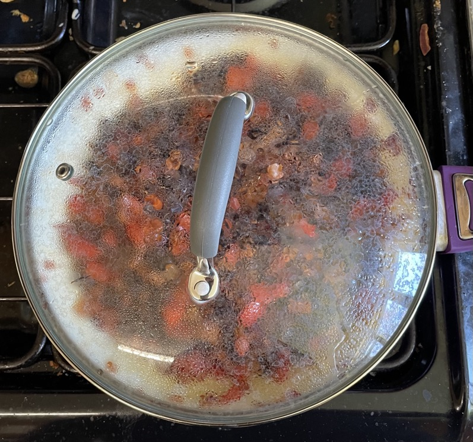
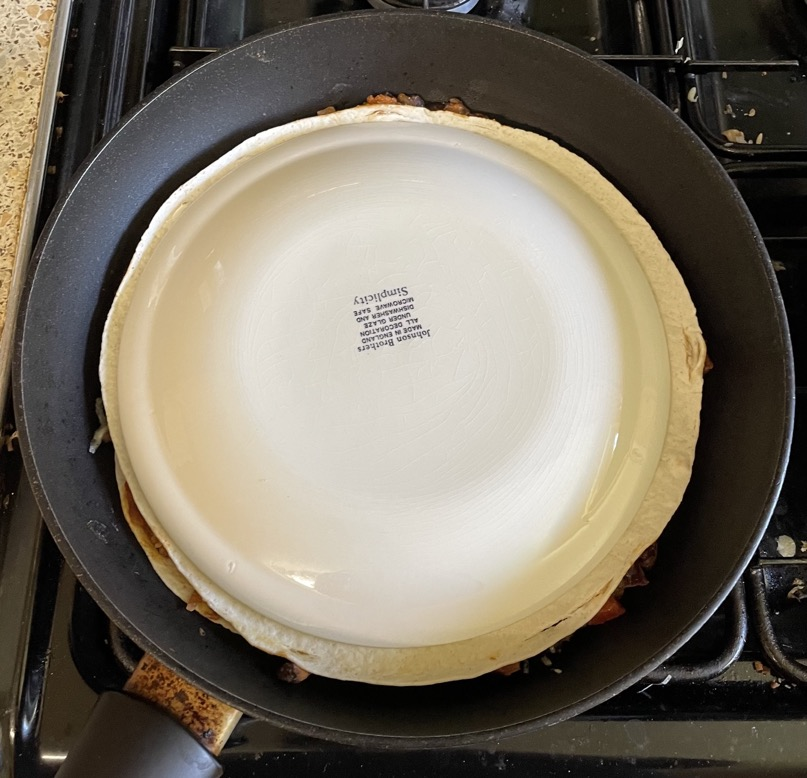

Quesadillas
Cooking
- Place between 2 tortillas
- filling
- 50-70g per quesadilla Cheddar cheese grated
- Heat in medium-hot pan for 3 mins
- Keep plate on top tortilla and use to flip
Serving
- Guacamole
- Sour cream
- Salsa
Combinations
Fillings
- Cook filling separately
- Meat
- Spanish chicken
- chicken grilled in chipotle / BBQ sauce
- leftover chicken spiced
- king prawns
- chorizo
- tuna
- Veg
- kidney beans crushed
- black beans crushed
- spring onions chopped
- red onion chopped
- mushrooms sliced
- tomatoes deseeded and chopped
- bell pepper finely chopped
- red / yellow / green pepper finely chopped
- red chilli finely chopped
- jalapenos chopped
- Aromatics
- fresh coriander
- chipotle paste / sauce
- garlic
- ground cumin
- ground coriander
Notes
- Made: 29 Apr 2023, 7 Jan 2023
Pics
29 Apr 2023

